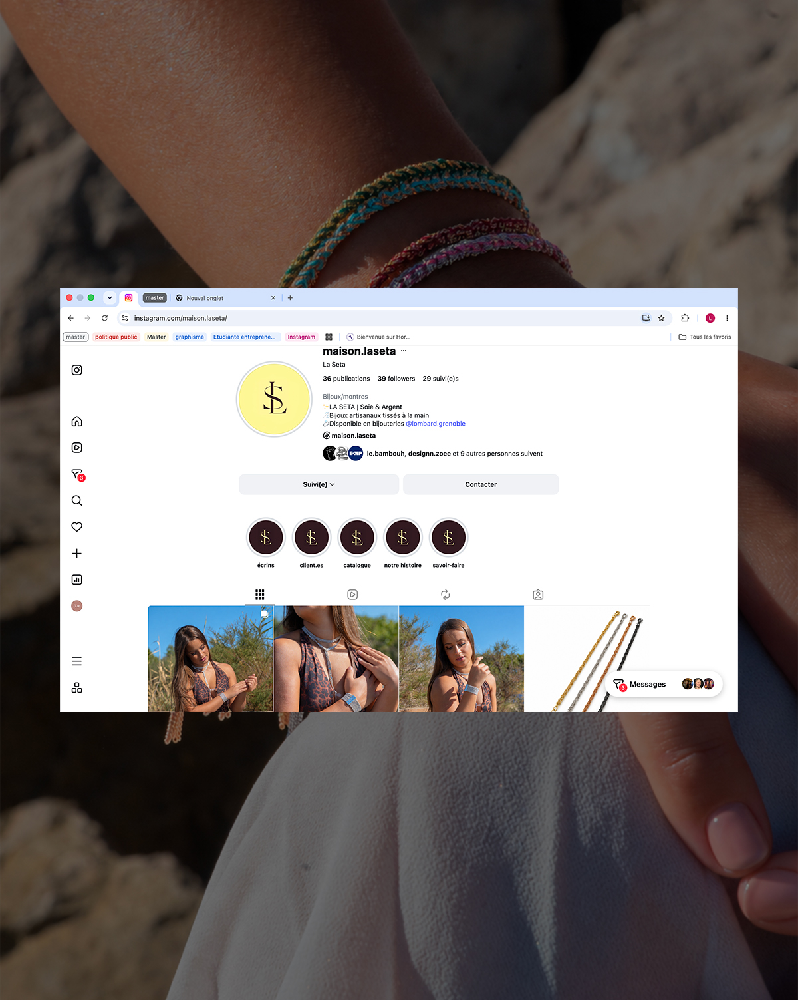

Community management · Communication de marque
Joaillerie
La Seta
Comment faire vivre l’univers d’une marque de bijoux au quotidien ? En tant que chargée de communication de La Seta, je relie identité visuelle, stratégie réseaux sociaux et création de contenus pour construire une présence cohérente.
Du premier signe graphique aux stories quotidiennes, chaque contenu participe à raconter la marque.

Mon rôle
Une identité,
une présence.
J’accompagne La Seta en tant que chargée de communication. Ma mission associe la création de l’identité visuelle de la marque et son déploiement sur les réseaux sociaux.
L’enjeu est de donner une continuité à sa communication : que l’on découvre un bijou dans une publication, une story ou sur le profil, on retrouve le même univers.
La démarche
Relier l’image
à la stratégie.
Créer l’identité visuelle
Je conçois les repères graphiques de la marque pour lui donner une présence reconnaissable. Le monogramme et ses déclinaisons colorées constituent une base commune pour ses supports de communication.
Construire la stratégie réseaux sociaux
Je définis une direction pour les contenus et leur organisation, afin que les publications s’inscrivent dans une communication d’ensemble. L’objectif : mettre en valeur les bijoux tout en faisant découvrir l’univers de La Seta.
Organiser les shootings
J’organise les shootings destinés aux publications en lien avec les besoins de la marque et la stratégie définie. Cette préparation permet de penser les images comme des contenus à part entière, avec une place dans la communication.

Au quotidien
Faire vivre
la marque.
J’assure l’actualisation des stories à la une et des stories quotidiennes. Les premières structurent les informations que l’on retrouve sur le profil ; les secondes entretiennent une présence régulière auprès de la communauté.
Ce suivi fait le lien entre la stratégie et la vie du compte : une identité visuelle se construit aussi dans la régularité et la cohérence des prises de parole.
Mon approche du community management : faire travailler ensemble le graphisme, l’organisation et le contenu pour donner une direction claire à la communication.